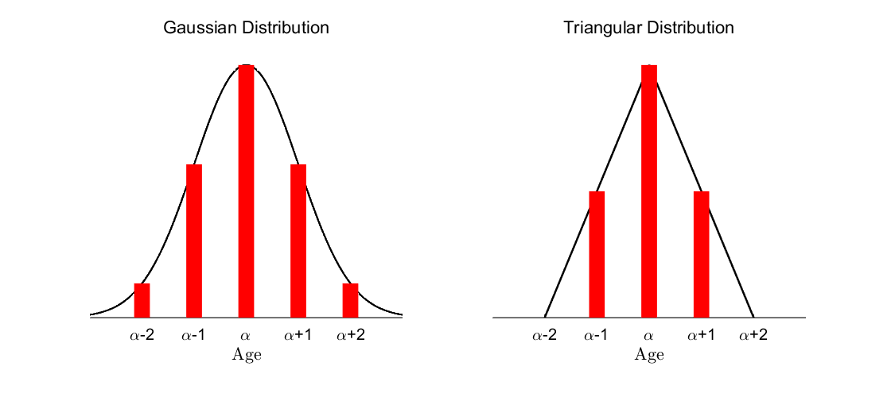
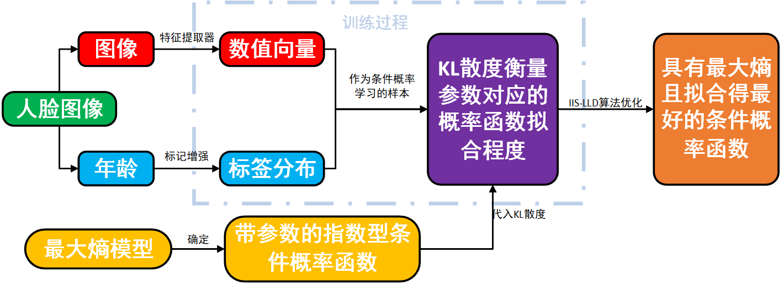
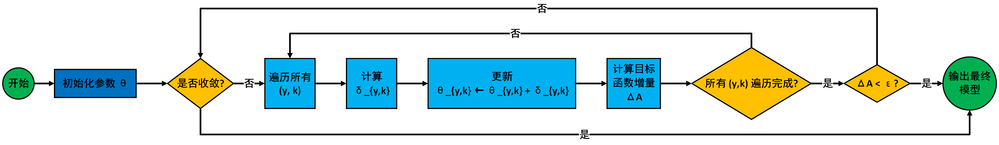
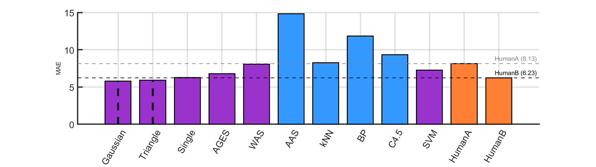
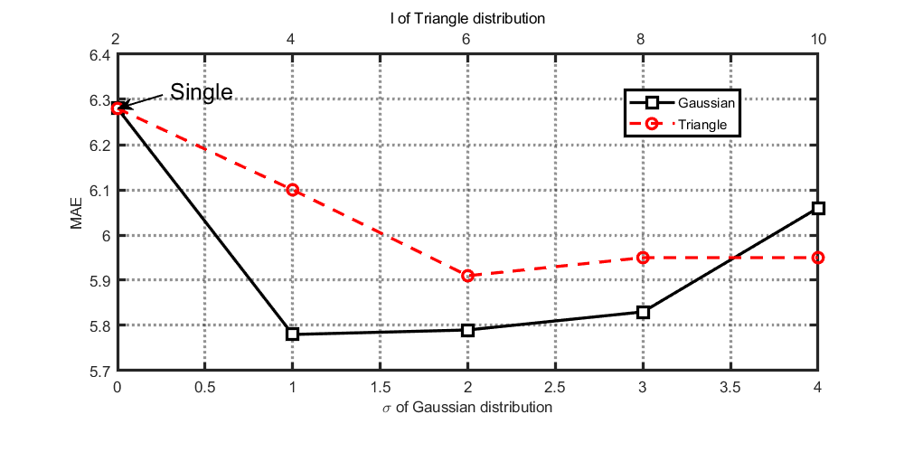
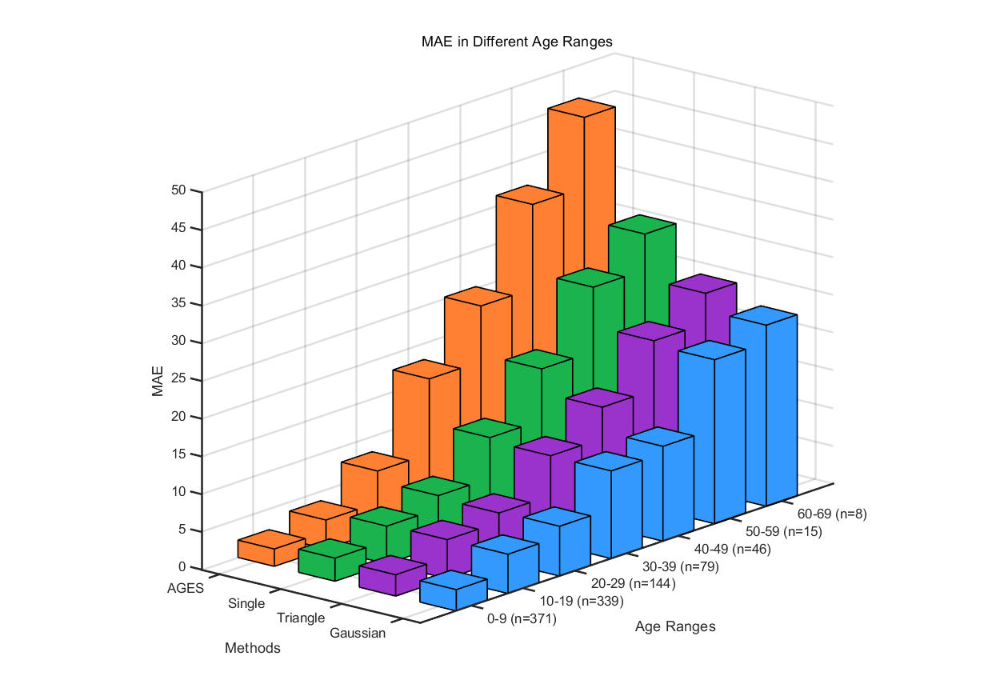

精读解析|从单一标签到标签分布：面部年龄估计的新方法
本文对Facial Age Estimation by Learning from Label Distributions by Xin Geng, Kate Smith-Miles, Zhi-Hua Zhou进行精读，系统梳理其研究框架，并深入推导其中的数学模型。
面部年龄估计面临数据稀疏性挑战（如高龄段样本不足）。受到年龄变化具有连续性（相邻年龄特征相似）启发，Xin Geng提出标签分布学习框架：将单一年龄标签扩展为覆盖邻近年龄的分布，通过共享年龄特征缓解数据不足，显著提升模型泛化能力，尤其是高龄的准确度。
定义标签分布
标签分布是单标签和多标签的一个拓广，并且标签分布的含义和概率或者模糊分类不同，不过在数学结构上与概率高度相似。标签分布的核心概念是，每个标签都是对样本的正确描述，但描述程度不同，所有标签的组合构成对样本的完整描述。相比传统的单标签学习，这种方法能更好地反映类别之间的相关性，特别适用于年龄估计这样的连续变量任务。
设\(\alpha\)是原始标签，\(y\)是一般标签，从单标签转换为标签分布需要遵循两个基本原则：
原始标签的描述程度最大，即 \(P(\alpha)\) 应该是分布中的最大值。
距离原始标签越远的标签，其描述程度越低，即 \(P(y)\) 随 \(|y - \alpha|\) 的增加而递减。
论文里使用的标签分布有以下两种：

高斯分布（Gaussian Distribution），通过指数衰减方式平滑地降低相邻标签的权重，定义如下： \[ P(y) = \frac{1}{Z} \exp \left(-\frac{(y - \alpha)^2}{2\sigma^2} \right) \]
其中，\(Z\) 是归一化因子，\(\sigma\) 控制分布的扩展范围。高斯分布能够较好地利用相邻标签信息，确保模型对年龄变化的连续性建模。
三角分布（Triangle Distribution），采用线性递减的方式，仅在一定范围内赋予相邻标签权重： \[ P(y) = \max \left(0, 1 - \frac{|y - \alpha|}{l} \right) \]
其中，\(l\) 决定了分布的跨度。相比高斯分布，三角分布更加局部化，确保远离原始标签的标签不会对模型产生影响。
标签分布模型与学习方式
以下是签分布学习的建模与优化方法的基本结构：

优化目标：KL散度
设输入空间为 $ \mathcal{X} = \mathbb{R}^d $，标签空间为 $ \mathcal{Y} = \{ y_1, y_2, \dots, y_c \} $。传统分类任务中，每个样本 $ x_i $ 仅对应一个标签，但在标签分布学习中，每个样本 $ x_i $ 关联一个 标签分布 $ P_i(y) $，表示该样本在不同标签上的分布权重。 目标是学习一个条件概率分布 $ p(y|x; \theta) $，使其尽可能接近 $ P_i(y) $。采用 KL散度 作为衡量准则：\[ \theta^* = \arg\min_{\theta} \sum_i \sum_y P_i(y) \log \frac{P_i(y)}{p(y|x_i; \theta)} \]
由于 \(P_i(y)\) 在训练样本里是常数，KL 散度最小化等价于 最大化对数似然（MLE）： \[ \theta^* = \arg\max_{\theta} \sum_i \sum_y P_i(y) \log p(y|x_i; \theta) \] 标签分布学习框架与传统问题在以KL散度为目标函数的情况下具有密切联系：
- 在单标签分类任务中，每个样本仅有一个确定的标签，即 $ P_i(y) = \delta(y, y_i) $。目标函数退化为经典的最大似然估计目标：
\[ \theta^* = \arg\max_{\theta} \sum_i \log p(y_i | x_i; \theta) \]
- 在多标签分类任务中，每个样本 $ x_i $ 关联一个标签集合 $ Y_i $，假设 $ P_i(y) $ 均匀分布在多个标签上。目标函数变为熵权重标签分配方法，将多标签样本转化为带权重的单标签样本，并优化最大似然目标：
\[ \theta^* = \arg\max_{\theta} \sum_i \frac{1}{|Y_i|} \sum_{y \in Y_i} \log p(y | x_i; \theta) \]
条件概率形式：最大熵模型
最大熵模型
确定了条件概率函数的形式，才能进行参数的调整实现KL散度的优化。论文采用了最大熵模型得到条件概率函数，该模型也是一个优化问题。目标函数是最大化熵，即在符合约束条件的前提下，使得条件分布 $ p(y|x; \theta) $ 尽可能均匀，包含最多的信息，避免引入额外的假设，从而提高模型的泛化能力。 $$ \max_{p(y|x; \theta)} \sum_{x,y} \tilde{p}(x) p(y|x; \theta) \log p(y|x; \theta) $$ 其中，$p(y|x; \theta)$为给定输入 $ x $ 的条件概率分布，是需要优化的目标分布； $ \tilde{p}(x,y) $是经验联合分布，由训练数据估计得到； $ \tilde{p}(x) $是经验边际分布，即 $ \tilde{p}(x) = \sum_y \tilde{p}(x,y) $； $ f_k(x,y) $为特征函数，表示输入 $ x $ 和类别 $ y $ 之间的某种特征； $ \theta $为模型参数，决定了条件概率分布的形状。
最大熵模型有两个约束条件：
- 特征函数的期望值约束，要求模型的特征函数期望值与训练数据保持一致：
\[ \sum_{x,y} \tilde{p}(x,y) f_k(x,y) = \sum_{x,y} \tilde{p}(x) p(y|x; \theta) f_k(x,y), \quad \forall k. \]
- 概率归一化约束，确保 $ p(y|x; ) $ 是一个合法的概率分布：
\[ \sum_y p(y|x; \theta) = 1, \quad \forall x. \] 特征函数会让人觉得很突兀，可以这样理解：如果特征函数表示图片中面部的皱纹数量，那么训练出的模型在期望意义上会在皱纹数量上尽可能贴合训练样本。论文里特征函数由特征提取器提供，它是一个黑盒，虽然无法直接解释其数值，但一个优秀的特征提取器会输出与目标（如年龄预测）高度相关的特征，因此这个约束可以让模型在这些预测相关的特征上进行最优拟合。
这个优化问题有一个解析解： \[ p(y|x; \theta) = \frac{1}{Z} \exp\left( \sum_k \theta_k f_k(x,y) \right), \]
其中
\[ Z = \sum_y \exp\left( \sum_k \theta_k f_k(x,y) \right). \]
解析解理论推导
优化算法：IIS-LLD
目标函数
将得到的指数型条件概率函数代入KL散度式子得到： \[ T(\theta) = \sum_{i} \sum_{y} P_i(y) \log \left( \frac{1}{Z(x_i)} \exp \left( \sum_k \theta_{y,k} g_k(x_i) \right) \right) \] 展开对数： \[ T(\theta) = \sum_{i} \sum_{y} P_i(y) \sum_k \theta_{y,k} g_k(x_i) - \sum_i \sum_{y} P_i(y) \log Z(x_i) \]
由于 \(Z(x_i)\) 与 \(y\) 无关，且 \(P_i(y)\) 对 \(y\) 求和为 1： \[ \sum_{y} P_i(y) \log Z(x_i) = \log Z(x_i) \sum_y P_i(y) = \log Z(x_i) \] 故 \[ T(\theta) = \sum_{i} \sum_{y} P_i(y) \sum_k \theta_{y,k} g_k(x_i) - \sum_i \log Z(x_i) \] 展开 \(Z(x_i)\) ：
\[ T(\theta) = \sum_{i} \sum_{y} P_i(y) \sum_k \theta_{y,k} g_k(x_i) - \sum_i \log \sum_y \exp \left( \sum_k \theta_{y,k} g_k(x_i) \right) \]
目标函数增量下界推导
我们希望最大化目标函数： \[ T(\theta) = \sum_{i,y} P_i(y) \sum_k \theta_{y,k} g_k(x_i) - \sum_i \log Z(x_i) \] 其中： \[ Z(x_i) = \sum_y \exp \left( \sum_k \theta_{y,k} g_k(x_i) \right) \]
定义参数更新： \[ \theta^{(t+1)} = \theta^{(t)} + \Delta \] 其中增量： \[ \delta_{y,k} = \theta_{y,k}^{(t+1)} - \theta_{y,k}^{(t)} \]
增量后的归一化因子： \[ Z^*(x_i) = \sum_y \exp \left( \sum_k (\theta_{y,k} + \delta_{y,k}) g_k(x_i) \right) \]
目标函数增量： \[ T(\theta + \Delta) - T(\theta) = \sum_{i,y} P_i(y) \sum_k \delta_{y,k} g_k(x_i) - \sum_i \log \frac{Z^*(x_i)}{Z(x_i)} \]
计算后一项： \[ \frac{Z^*(x_i)}{Z(x_i)} = \frac{\sum_y \exp \left( \sum_k (\theta_{y,k} + \delta_{y,k}) g_k(x_i) \right)} {\sum_y \exp \left( \sum_k \theta_{y,k} g_k(x_i) \right)} \]
提取原归一化项： \[ \frac{Z^*(x_i)}{Z(x_i)} = \sum_y \frac{\exp \left( \sum_k \theta_{y,k} g_k(x_i) \right)}{Z(x_i)} \exp \left( \sum_k \delta_{y,k} g_k(x_i) \right) \]
由于： \[ p(y | x_i; \theta) = \frac{\exp \left( \sum_k \theta_{y,k} g_k(x_i) \right)}{Z(x_i)} \]
所以： \[ \frac{Z^*(x_i)}{Z(x_i)} = \sum_y p(y | x_i; \theta) \exp \left( \sum_k \delta_{y,k} g_k(x_i) \right) \]
使用对数不等式放缩： \[ -\log x \geq 1 - x \]
应用到目标函数增量： \[ -\sum_i \log \sum_y p(y | x_i; \theta) \exp \left( \sum_k \delta_{y,k} g_k(x_i) \right) \geq \sum_i \left( 1 - \sum_y p(y | x_i; \theta) \exp \left( \sum_k \delta_{y,k} g_k(x_i) \right) \right) \]
故 \[ T(\theta + \Delta) - T(\theta) \geq \sum_{i,y} P_i(y) \sum_k \delta_{y,k} g_k(x_i) + n - \sum_i \sum_y p(y | x_i; \theta) \exp \left( \sum_k \delta_{y,k} g_k(x_i) \right) \]
下面使用 Jensen不等式 继续放缩，
定义： \[ g^\#(x_i) = \sum_k |g_k(x_i)| \]
由于指数函数是凸函数，根据 Jensen不等式，令 $ s(g_k(x_i)) $ 为 $ g_k(x_i) $ 的符号函数： \[ \sum_k \frac{|g_k(x_i)|}{g^\#(x_i)} \exp \left( \delta_{y,k} s(g_k(x_i)) g^\#(x_i) \right) \geq \exp \left( \sum_k \frac{|g_k(x_i)|}{g^\#(x_i)} \delta_{y,k} g^\#(x_i) \right) \]
即 \[ \sum_k \frac{|g_k(x_i)|}{g^\#(x_i)} \exp \left( \delta_{y,k} s(g_k(x_i)) g^\#(x_i) \right) \geq \exp \left( \sum_k \delta_{y,k} |g_k(x_i)| \right) \]
调换方向： \[ -\exp \left( \sum_k \delta_{y,k} |g_k(x_i)| \right) \geq -\sum_k \frac{|g_k(x_i)|}{g^\#(x_i)} \exp \left( \delta_{y,k} s(g_k(x_i)) g^\#(x_i) \right) \]
代入前面的下界： \[ T(\theta + \Delta) - T(\theta) \geq \sum_{i,y} P_i(y) \sum_k \delta_{y,k} g_k(x_i) + n - \sum_{i, y} p(y | x_i; \theta)\sum_k \frac{|g_k(x_i)|}{g^\#(x_i)} \exp \left( \delta_{y,k} s(g_k(x_i)) g^\#(x_i) \right) \]
我们将右侧表达式定义为： \[ \mathcal{A}(\Delta | \theta) = \sum_{i,y} P_i(y) \sum_k \delta_{y,k} g_k(x_i) + n - \sum_{i, y} p(y | x_i; \theta)\sum_k \frac{|g_k(x_i)|}{g^\#(x_i)} \exp \left( \delta_{y,k} s(g_k(x_i)) g^\#(x_i) \right) \]
即 \[ T(\theta + \Delta) - T(\theta) \geq \mathcal{A}(\Delta | \theta) \]
IIS-LLD算法
\(T(\theta)\) 通过 Jensen 不等式 的放缩，使得\(\mathcal{A}(\Delta | \theta)\) 各个维度变得相互独立，可以逐个维度独立优化。
优化过程即对 \(\mathcal{A}(\Delta | \theta)\) 求导，并令梯度为 0，得到每个维度的增量：
\[ \frac{\partial \mathcal{A}(\Delta | \theta)}{\partial \delta_{y,k}} = \sum_{i} P_i(y) g_k(x_i) - \sum_{i} p(y | x_i; \theta) g_k(x_i) \exp(\delta_{y,k} s(g_k(x_i)) g^\#(x_i)) = 0. \]
此方程可以通过数值方法（如 Gauss-Newton 方法）逐个求解每个维度的增量 \(\delta_{y,k}\)，最终完成迭代更新。算法流程如下：

经典的IIS算法要求特征函数非负，论文里为了保证标签分布模型的灵活性，取消了这一限制，所以命名为IIS-LLD算法。从算法上来看也能得到最后的解，不过从数值方法的角度来看，这会带来不稳定的风险。
实验和结果分析
实验使用了 FG-NET Aging Database，该数据集包含1002 张面部图像，来自82 名受试者，年龄范围在0-69 岁之间。每名受试者的照片数量在6-18 张之间，数据集中包含不同的光照、表情和姿态变化。由于年龄较大的样本较少，研究者采用了 Leave-One-Person-Out（LOPO）交叉验证，即每次选取一名受试者的所有照片作为测试集，其余受试者的照片作为训练集，重复82 轮计算最终结果。实验使用 Mean Absolute Error（MAE） 作为误差度量，计算预测年龄与真实年龄之间的平均绝对误差。
特征提取方法基于 外观模型（Appearance Model）。该模型首先模型检测人脸关键点，通过 PCA（主成分分析） 对关键点坐标进行降维；然后对人脸图像进行标准化，使其符合统一的形状；再对标准化后的灰度图进行PCA 降维，提取纹理特征；最终形状和纹理特征被结合成一个特征向量。在 PCA 降维过程中，研究者选择保留95% 的数据变异性，截取了前200个主成分。
以下是实验中用到的方法和对应的关键参数：
| 方法 | 关键参数 |
|---|---|
| IIS-LLD (Gaussian) | 高斯分布，标准差 ( = 1 ) |
| IIS-LLD (Triangle) | 三角分布，底边长度 ( l = 6 ) |
| IIS-LLD (Single) | 传统单标签，仅用真实年龄 |
| AGES | 老化模式子空间维度 = 20 |
| WAS | 不需要设置参数 |
| AAS | 误差阈值 = 3，年龄段 = (0-9, 10-19, 20-39, 40-69) |
| KNN | 邻近样本数 ( K = 30 ) |
| BP (神经网络) | 隐藏层神经元 = 100 |
| C4.5 (决策树) | 使用 J4.8 版本，默认参数 |
| SVM | 核函数：RBF，核宽度 = 1 |
| HumanA (灰度图像) | 仅展示去除背景的灰度脸部图像 |
| HumanB (彩色图像) | 展示完整的彩色图像，包括头发、服饰、背景等 |
实验结果如下所示，表现优于HumanA使用紫色柱形，优于HumanB加上竖直虚线：

从图中可以看出来，即使没有使用标签分布，IIS-LLD算法表现已经十分优秀，这得益于最大熵模型的良好性质，标签分布达到了锦上添花的效果，使得算法性能超过HumanB。高斯分布覆盖了所有年龄，而三角分布只覆盖了临近的年龄，单标签只覆盖本身的年龄，它们的表现优度依次递减。
论文还对两种标签分布的参数\(\sigma\)、\(l\)进行了调整，测试对应的MAE，结果如下：

参数越大，意味着分布约分散。两个分布的参数为0时，都退化为单标签。在临近标签对真实标签做贡献但又不至于“喧宾夺主”间需要保持平衡，才能达到最好的效果。
接下来是对三种IIS-LLD算法和baseline中表现最好的AGES模型在各个年龄段内的MAE做可视化，n表示该年龄段内的样本数量。

在数据丰富低年龄段内，IIS-LLD模型稍逊于专门做面部年龄估计的AGES模型；而在数据稀疏的高年龄段内IIS-LLD模型明显优于AGES模型。这验证了论文用标签分布弥补数据不足缺陷的想法。
作者最后给出了标签分布存在应用价值的三个场景，帮助处理标签不确定性和数据稀缺问题：实例初始标签即为类分布；类之间存在强相关性；不同来源的标签存在争议。